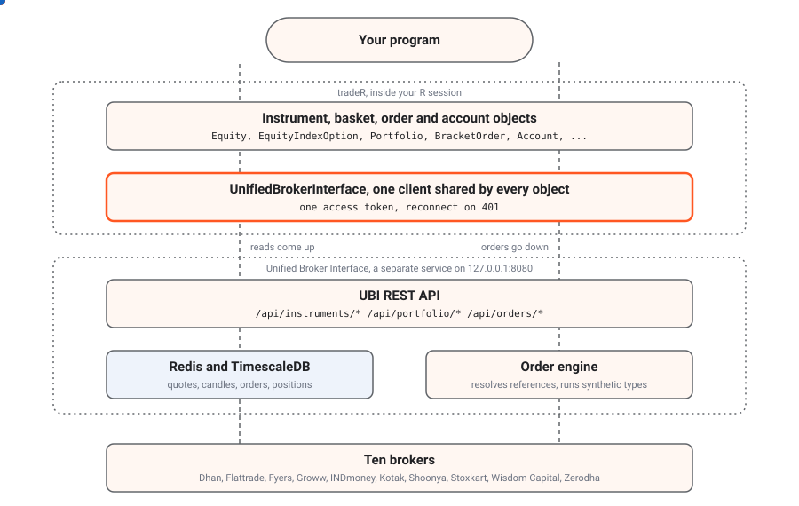

This section explains how the package is put together and why. The
short version is that tradeR is a thin layer of R6 objects
over one REST client, and everything that knows about brokers, prices
and order types lives in the Unified
Broker Interface (UBI), a separate service that runs on the same
machine.
A useful way to picture it is a restaurant. Your program is the diner, the instrument objects are the menu, the shared client is the one waiter every table uses, UBI is the kitchen, and the ten brokers are the suppliers: the menu never cooks anything, it only tells the waiter what to ask the kitchen for.
From your program down to the brokers
The animation below shows the five layers between your program and a broker’s server. The orange dots are reads, such as a quote, a set of candles or the positions, travelling up to your program. The blue dot is an order travelling down, through UBI’s order engine, to one broker.

The numbered list below describes each layer from the top, with where it lives.
-
Instrument, basket, order and account objects are
what your program builds and calls. An
Equity, anEquityIndexOptionor aCommodityFuturesis one instrument; aPortfolio, aWatchlistor anIndexis a basket of instruments; aBracketOrderor aTrailingStopOrderdescribes one synthetic order; anAccountstands for the whole trading account. They live in the filesR/assets_*.R,R/asset_baskets_*.R,R/orders_*.RandR/accounts_account.R. Not one of them holds any market data between calls; each read is a fresh request. Baskets are the one part that also keeps data of its own, in this project’s MongoDB, because UBI stores no index constituents or fund holdings; Asset baskets describes them. -
The shared client,
UnifiedBrokerInterfaceinR/unified_broker_interface_client.R, is the only code that speaks HTTP, through thehttr2package. Every object in an R session sends its requests through the same client, because UBI holds a single access token for the whole application and a second client would log the first one out. The client connects on first use, reconnects and retries once on HTTP 401, and turns each failure status into its own condition class. -
UBI’s REST API listens on
http://127.0.0.1:8080. It answers almost every read from its own Redis and TimescaleDB, which its background scripts keep filled from the brokers, so a read never waits for a broker. It is documented route by route on the UBI site. - UBI’s order engine is a separate UBI process that places every order on the REST API’s behalf. It works out prices and quantities that were described rather than stated, holds plain limit orders until the book reaches their price, and runs the synthetic order types, 54 named types and the plan, some of which keep placing orders long after your call has returned. See Order engine on the UBI site.
- The ten brokers are Dhan, Flattrade, Fyers, Groww, INDmoney, Kotak, Shoonya, Stoxkart, Wisdom Capital and Zerodha. UBI logs in to each of them and chooses which one sends a given order; this package never names a broker and never talks to one.
What the package does not do.
The package keeps no cache, batches no date ranges, rounds no prices to the tick and checks no quantities against the lot size. UBI already does each of those, or holds the rule, and doing it again here would create a second copy that could drift. Design choices records each decision.
Which layer may talk to which
The rules below keep the layers independent. The table shows, for each part, what it is allowed to call.
| Part | Calls the shared client | Calls UBI over HTTP | Calls a broker | Keeps state between calls |
|---|---|---|---|---|
| Your program | Through the objects, or directly for a route no object wraps | No | No | Whatever it chooses |
| Instrument, order and account objects | Yes | No, only through the client | No | Only the instrument’s identity, lot size and tick size, read once at construction |
Basket objects and BasketStore
|
Yes | No, only through the client | No | The members and their weights or quantities, saved in this project’s MongoDB |
Shared client, UnifiedBrokerInterface
|
Not applicable, it is the client | Yes, the only code that does | No | The access token and its expiry |
| UBI REST API | No | Not applicable, it is the API | Yes, for modifications, cancellations and flatten’s cancels, and for a quote when no fresh one is cached | Everything, in Redis, TimescaleDB and MongoDB |
| UBI order engine | No | No | Yes, every placement | Held limit orders and armed and working synthetic orders |
| Brokers | No | No | Not applicable | The real orders, trades, positions and holdings |
The one rule that matters most for a caller is the second row. An
instrument object never opens its own connection, so any number of
instruments, baskets, synthetic orders and an Account can
live in one R session and share one login. The
instrument model explains how the client is shared.
A read and an order, side by side
The sequence below shows the two kinds of request the layers carry: a read of the last price, which UBI answers from memory, and an order that carries a price reference, which the order engine resolves and sends to a broker.
sequenceDiagram
autonumber
participant P as Your program
participant O as Equity object
participant C as Shared client
participant A as UBI REST API
participant E as Order engine
participant B as Broker
P->>O: share$last_price
O->>C: get("/api/instruments/ltp")
C->>A: GET with access-token
A-->>C: last price from UBI's Redis
C-->>O: parsed JSON as a named list
O-->>P: 1226
P->>O: share$buy_at_best_offer_price(quantity = 1, product = "cnc")
O->>C: post("/api/orders/place") with price_reference
C->>A: POST with access-token
A->>E: hand the order over as an intent
E->>E: read the quote, round to the tick
E->>B: place the limit order
B-->>E: order id
E-->>A: answer with intent_id
A-->>C: answer
C-->>O: parsed JSON as a named list
O-->>P: named list with broker, order_id, outcome
Every order takes the second path, through the engine. A plain limit order stops at the engine, which holds it until the book reaches its price; Order engine describes that and the parents the engine keeps.
Where to go next
The articles in this section go deeper into each part of the design, as the list below describes.
-
The instrument
model covers the class hierarchy from
Instrumentto the 27 family classes, the single chain of analysis classes underneath it, what lives at each level, and how the baskets, the synthetic orders and the account relate to it. - Order engine explains what the package sends as descriptions rather than values, why a plain limit order is held, what a parent is, and how to read an answer that arrived late.
- Design choices records the decisions that shape the package, each with its problem, its reasoning, its cost and where to see it in the code. It keeps the twelve decisions of the Python library and adds the ones the R port made.
-
Repository
structure lists every file in
R/, how many there are, and how they are grouped.